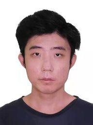

Organizing Committee
Honorary General Chair
DONG, Jin Song ✉
National University of Singapore, Singapore
General Chairs
|
 |
|
Jun Sun✉
Singapore Management University, Singapore
|
Yang Liu✉
Nanyang Technological University, Singapore
|
Program Chairs
|
 |
|
Yun Lin ✉
Shanghai Jiao Tong University, China
|
Zhe Hou ✉
Griffith Univerity, Australia
|
Industry Track Chairs
Fast Abstract Chairs
Journal-First Chairs
Publicity Chairs
Finance Chair

Yuekang Li ✉
Nanyang Technological University, Singapore
Local Arrangement Chair

Xiaofei Xie ✉
Singapore Management University, Singapore
Web Chair

Jian Wang ✉
Nanyang Technological University, Singapore
Steering Committee
- Dan Dongseong Kim, The University of Queensland ( Chair )
- Yennun Huang, Academia Sinica
- Nobuyasu Kanekawa, Hitachi Research Lab
- Jin Song Dong, National University of Singapore
- Karthik Pattabiraman, University of British Columbia
- Gernot Heiser, University of New South Wales
- Sy-Yen Kuo, National Taiwan University
- Zhi Jin, Peking University
- Jin Hong, University of Western Australia
- Hyoungshick Kim, Sungkyunkwan University
Program Committee
- Alex Orailoglu, University of California, San Diego
- Barbara Gallina, Mälardalen University
- Bo Wang, Beijing Jiaotong University
- Bowen Xu, Singapore Management University
- Chenghao Cai, Monash University
- Chunrong Fang, Nanjing University
- Cristina Nita-Rotaru, Northeastern University
- Cen Zhang, NTU, Singapore
- Dong Seong Kim, University of Queensland
- David Sanan, Singapore Institute of Technology
- Fumio Machida, University of Tsukuba
- Gangman Yi, Dongguk University, ROK
- Guanpeng Li, University of Iowa
- Haijun Wang, Xi'an Jiaotong University
- Haruo Yokota, Tokyo Institute of Technology
- Hiroshi Nakamura, The University of Tokyo
- Hiroyuki Okamura, Hiroshima University
- Homa Alemzadeh, University of Virginia
- Hung-Min Sun, Deptartment of Computer Science, National Tsing Hua University, Taiwan
- Hyuk Lim, Gwangju Institute of Science and Technology (GIST)
- Hangsheng Zhang, NUS, Singapore
- Ilir Gashi, City, University of London
- Jiajun Jiang, College of Intelligence and Computing, Tianjin University
- Jianhui Jiang, Tongji university
- Jianwen Xiang, Wuhan University of Technology
- Jie Zhang, King's College London
- Jin Hong, University of Western Australia
- Junjun Zheng, Osaka University
- Jyh-haw Yeh, Department of Computer Science, Boise State University, USA
- Jian Zhang, NTU, Singapore
- Jihong Wang, Xi'an Jiaotong Univeresity, China
- Kailong Wang, Huazhong University of Science and Technology
- Katerina Goseva-Popstojanova, Lane Department of Computer Science and Electrical Engineering. West Virginia University
- Katinka Wolter, Freie Universität Berlin
- Kenichi Kourai, Kyushu Institute of Technology
- Kenji Kono, Keio Univ.
- Kuo-Feng Ssu, National Cheng Kung University
- Kamanashis Biswas, Australian Catholic University
- Leo Yu Zhang, Deakin University
- Leonardo Montecchi, Norwegian University of Science and Technology
- Lewis Tseng, Boston College
- Long Wang, Lab for Reliability and Security of Networks and Systems Institute for Network Sciences and Cyberspace Tsinghua University
- Luigi De Simone, Università degli Studi di Napoli Federico II
- Masato Kitakami, Chiba University
- Michael Lyu, The Chinese University of Hong Kong
- Min Xie, City University of Hong Kong
- Min Zhang, East China Normal University
- Nagarajan Kandasamy, Drexel University
- Naipeng Dong, The University of Queensland, Australia
- Naohiro Hayashibara, Kyoto Sangyo Univ.(Japan)
- Nobuyasu Kanekawa, Hitachi, Ltd.
- Oliver Theel, Carl von Ossietzky University of Oldenburg
- Qi Xin, Wuhan University
- Roberto Pietrantuono, Università degli Studi di Napoli Federico II
- Rui Peng, Beijing University of Technology
- Ruitao Feng, Nanyang Technological University
- Ruofan Liu, NUS, Singapore
- Santonu Sarkar, BITS Pilani
- Satoshi Fukumoto, Tokyo Metropolitan University
- Seunghyun Yoon, Gwangju Institute of Science and Technology
- Sheng-De Wang, National Taiwan University
- Sonia Ben Mokhtar, CNRS
- Sun-Yuan Hsieh, National Cheng Kung University
- Sy-Yen Kuo, National Taiwan University
- Shang-Wei Lin, Nanyang Technological University
- Shantanu Pal, Deakin University
- Tadashi Dohi, Hiroshima University
- Tatsuhiro Tsuchiya, Osaka University
- Test Author, XYZ University
- Toshiaki Aoki, JAIST
- Toshinori Sato, Fukuoka University
- Xavier Defago, Tokyo Institute of Technology
- Xiaolin Chang, Beijing Jiaotong University
- Xiaoyu Sun, The Australian National University
- Yanguo Peng，Xidian University
- Yan XIAO, National University of Singapore
- Yang Liu, Nanyang Technological University
- Yijian Wu, Fudan University
- Ying Wang, Institute of Computing Technology, Chinese Academy of Sciences
- Young-Sik Jeong, Dongguk University, ROK
- Yun Lin, Shanghai Jiao Tong University (Co-Chair)
- Yaowen Zheng, NTU, Singapore
- Yuqi Chen, ShanghaiTech University, China
- Yedi Zhang, NUS, Singapore
- Yifan Liao, NUS, Singapore
- Yufan Cai, NUS, Singapore
- Zbigniew Kalbarczyk, Coordinated Science Laboratory
- Zhe Hou, Griffith University (Co-Chair)
- Zheng Zheng, School of Automation Science and Electronic Engineering, Beihang University, Bejing, China
- Zahra Jadidi, Griffith University
Industry Program Committee
- Ennan Zhai, Alibaba Group
- Hadrien Bride, Dependable Intelligence
- Horacio Mijail Anton Quiles, ConsenSys
- Hua Yan, Tencent
- Kailiang Ji, NIO Inc
- Peng DI, Ant Group
- Yan Liu, Runtime Verification Inc.
- Karthick Gunasekaran, Amazon, USA
Fast Abstract Committee
- Arash Shaghaghi, The University of New South Wales (UNSW Australia) and Data61, CSIRO, Australia
- Babu Pillai, Southern Cross University, Australia
- Bo Wang, Beijing Jiaotong University, China
- Faheem Ullah, The University of Adelaide, Australia
- Hye-Young (Helen) Paik, University of New South Wales (UNSW)
- Jie Zhang,, King's College London, United Kingdom
- Jinhao Dong, Peking University, China
- M.A.P. Chamikara, CSIRO's Data61, Australia
- Nianyu Li, Peking University, China
- Qian Fu, CSIRO DATA61, Australia
- Qingyuan Liang, Peking University, China
- Ruitao Feng, UNSW Sydney Australia, Australia
- Ruofan Liu, National University of Singapore, Singapore
- Shangqing Liu, Nanyang Technological University, Singapore
- Sin Gee Teo, Agency for Science, Technology and Research, Singapore
- Tram Truong-Huu, Singapore Institute of Technology, Singapore
- Vinay Sachidananda, Nanyang Technological University, Singapore
- Xun Yi, RMIT University, Australia
- Yuekang Li, Nanyang Technological University, Australia
- Zeyu Sun, Peking University, China
Journal-first Committee
- David Wong, National University of Singapore, Singapore
- Hangsheng Zhang, National University of Singapore, Singapore
- Horacio Mijail Anton Quiles, ConsenSys, Australia
- Ruofan Liu, National University of Singapore, Singapore
- Yifan Liao, National University of Singapore, Singapore
- Yifan Zhang, National University of Singapore, Singapore
- Yufan Cai, National University of Singapore, Singapore
- Yunrui Pei, Shanghai Jiao Tong University, China